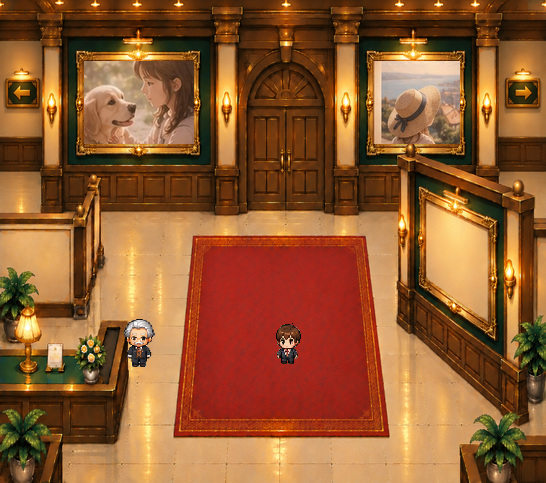
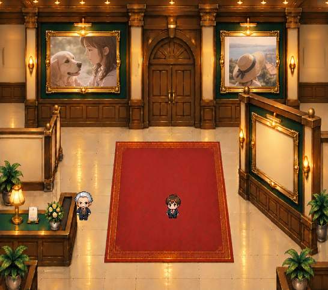
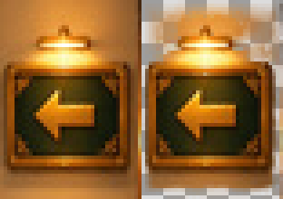
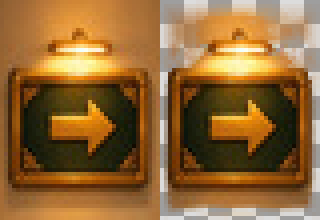
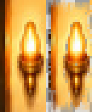
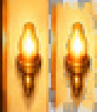

組み合わせを切り替えて確認
実際のPNGレイヤーをブラウザで合成しています。背景、写真、正式キャラクターは原本を使用。元のゲームは変更していません。
完成美術の比較


すべて表示


すべて非表示
原本一致の検証: QAマニフェスト
独立PNGの原本品質を確認




壁灯の光と金色の縁は原本から抽出。室内の固定構図・北扉・額縁・右手前展示壁は変更していません。ゲーム本体には未統合です。